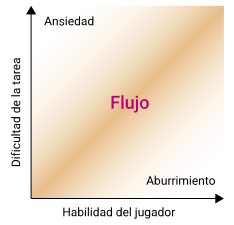

Algoritmos procedurales en videojuegos
- Explicar el lugar de los algoritmos procedurales en el diseño, desarrollo y la jugabilidad en los videojuegos.
- Definir una clasificación de videojuegos en relación a los niveles de profundidad que tiene su contenido procedural.
- Desarrollar un videojuego procedural que sirva de ejemplo a lo expuesto en el marco teórico de esta investigación.
Definiendo a los algoritmos procedurales

Se entiende por generación por procedimientos o procedural a la creación de datos con algoritmos en lugar de forma manual.
Un algoritmo que crea contenido arbitrario pero en base a directrices.
Un algoritmo recursivo, que se llama así mismo. Se expresa la solución de un problema haciendo una llamada recursiva.
Se crea un árbol de dependencias.
Nodos que se conectan entre sí.
Cuando un nodo no tiene uno superior que lo preceda, a este nodo lo llamamos nodo raíz.
Al ejecutar nuestra orden ocurre la primera iteración, tenemos ramas, de cada una de estas ramas surgirán más ramas, y así sucesivamente.
- Debemos definir los límites mediante diseño.
- Más complejos son estos algoritmos, menos control tenemos sobre la creación de contenido.
- Más peligro de generar bugs.
- Es en este lugar donde las directrices encuentran su materialización en los algoritmos de ramificación y poda.
Contenido procedural
Historia de los videojuegos procedurales
Conway's Game of Life
El primer videojuego procedural conocido, desarrollado en 1970.
Funcionaba con el siguiente set de reglas:
- Cualquier célula viva con menos de dos vecinos vivos, moría. Por causas de subpoblación.
- Cualquier célula viva con más de tres vecinos moría, por superpoblación.
- Cualquier célula con dos o tres vecinos vivos sobrevivía, pasando a la siguiente generación.
- Cualquier casillero con exactamente tres células vivas sería poblada con otra célula viva.

Rogue (1980)
El título de mayor influencia en todos los juegos procedurales
Los escenarios los recursos que podía obtener el usuario eran ilimitados.
De manera incremental se sube también la dificultad y la agresividad de los enemigos.
Diablo (1996)
Generaba calabozos y algunos elementos sobre la marcha, en lugar de ser ítems prefijados con anterioridad.
Dwarf Fortress (2006)
Este brinda un mundo único: altura, condiciones climáticas, temperatura, ambiental y pueblos.
Cada mundo construido es único.
Los eventos que tienen lugar durante el juego afectarán a los siguientes juegos en el mismo mundo.
No man's sky (2016)
Un universo totalmente procedural
Con sus 18 trillones de planetas pone en la cima a los algoritmos procedurales y su enorme potencial de creación.
Clasificación videojuegos procedurales
- Se identifican los distintos tipos de videojuegos procedurales.
- Se establece una clasificación acorde al nivel de profundidad que alcanza su contenido.

- Nivel 1: Básicos
- Nivel 2: Intermedios
- Nivel 3: Avanzados
- Nivel 4: Absolutos
Nivel 1
Tetris (1984)
Se compone de cuatro piezas o tetrominós.
Van apareciendo de manera aleatoria y el jugador debe ubicarlos de manera de generar líneas horizontales.
Tiene sólo un elemento que aparece de manera aleatoria.
La dificultad incrementa con la aceleración de la caída de fichas.

Roguelikes
Más nivel de profundidad para la creación de elementos. Al menos dos niveles.
Por lo general, sus escenarios se crean de manera procedural.
Deben venir acompañados con un incremento de la dificultad.
Prestar atención a la curva de dificultad del juego.
Nivel 3
- El nivel de complejidad es superior.
- Los videojuegos mas característicos son los simuladores de entornos virtuales.
- Tales como el Sim City, GTA, Left 4 Dead y Dying Light entre otros.
GTA V (2013)
Las personas, los vehículos y los eventos de este mundo se generan proceduralmente.
Variantes en el género, altura, peso, contextura física, color de cabello, ojos y piel, y ropa.
Directrices de creación bien diseñadas, sin producir errores lógicos u obstáculos en la creación de contenido.
Dying Light (2015)
"Nada es permanente, excepto el cambio" - Heráclito
Un mundo infectado por zombis, con civiles en busca de ayuda y héroes anónimos.
La próxima entrega promete un entorno que cambiará según las decisiones que el usuario tome.
Nivel 4
- Videojuegos cuyo contenido es completamente procedural.
- Aprovechan la potencia de los procesadores actuales y de la computación en la nube.
- Expanden sus horizontes hacia mucho mas alla de lo que un jugador pueda recorrer en una vida.

Minecraft (2009)
Posee un territorio estable equivalente a 4.080.576.000km2.
Aunque las matemáticas estiman un total de 4.722.366.482.896.645km2, el límite teórico de la arquitectura de 32 bits.
No Man's Sky (2016)
Todo su contenido es procedural, incluso la música.
Psicología aplicada a videojuegos procedurales
Nos servimos de la psicología y sociología como base teórica para tener un Game Design sólido
Taxonomía de Bartle
Teoría de Flow
Taxonomía de Bartle
Teoría de Flow
Se refiere al estado mental operativo en la cual una persona está completamente inmersa en la actividad que realiza.
Mihaly Csikszentmihayi (1975)
Teoría de Flow
- Distorsiones en la experiencia temporal.
- Euforia.
- Sentido de control sobre la actividad que se realiza.
- Una sensación de completitud o unidad integral de la persona.
- El foco de conciencia se reduce a la actividad misma, acción y conciencia se fusionan.
Teoría de Flow
Teoría de Flow

Eternity
"Eres Luke, un caballero que tras fallecer en batalla cae en una dimensión extraña conocida como el “Limbo”. El Limbo no es ni el cielo ni el infierno, es el lugar al que fue asignado para expiar sus pecados en vida. Lo que debe hacer Luke es abrirse paso a través del Limbo para llegar al cielo."
Es un videojuego procedural en tercera persona, inspirado en el universo diegético del Castlevania, con influencias de Doom, Heretic y Hexen.
El usuario debe hacerse paso a través de interminables laberintos para lograr su salvación.
- Todos los niveles generados de manera procedural.
- La dificultad del juego se maneja de manera exponencial.
- Distintos tipos de universos (romano antiguo, egipcio, medieval, precolombino) con enemigos representativos de ese universo.
Meta de diseño
Lograr un videojuego que nunca termine y siempre presente nuevos desafíos. Tener un juego que permita a los usuarios saber cual es su límite, y superar sus propios récords.